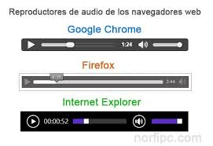

la etiqueta < audio> y la etiqueta < video> funcionan de una manera muy parecida y ambas comparten muchos atributos, así que lo aquí expuesto también te resultará de utilidad para introducir archivos de video en HTML5. Al grano, de entrada la etiqueta < audio> parece ser casi perfecta porque de entrada es muy sencilla de utilizar, pero como más adelante veremos, el problema está en los formatos de archivos de audio que soporta cada navegador, sobre todo pensando en navegadores antiguos . Esta sería la etiqueta de audio ideal en el mundo de los unicornios y del arco iris: < audio src="mi-archivo-de-audio.mp3">< /audio>
En lugar de sólo utilizar el atributo src en la etiqueta < audio> podemos especificar múltiples formatos de archivo de distintas fuentes así: < audio controls> < source src="mi-archivo-de-audio.ogg" type="audio/ogg"> < source src="mi-archivo-de-audio.mp3" type="audio/mpeg"> < source src="mi-archivo-de-audio.wav" type="audio/wav"> < /audio>
